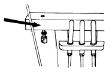
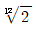

피아노조율산업기사 (2004-05-23 기출문제)
1과목: 임의 구분
1. 그랜드형 피아노 전체의 길이가 대략 275cm 이상일 때 부르는 명칭은?
- 업라이트형(UPRIGHT)
- 스피넷형(SPINET)
- 그랜드형(GRAND)
- 콘서트 그랜드형(FULL CONCERT GRAND)
(정답률: 알수없음)

2. 향판(sound board)에 대한 설명 중 틀린 것은?
- 가볍고 탄성이 강한 활엽수가 좋다.
- 현의 미세한 진동을 증폭시키는 역할을 한다.
- 진동하기 쉬운 구조로 설계되어야 한다.
- 공명현상을 위해 고음부가 저음부보다 더 두껍다.
(정답률: 알수없음)
3. 향봉에 대한 설명 중 틀린 것은?
- 향판의 나무결(grain) 방향과 거의 90° 가 되도록 접착한다.
- 현의 진동을 향판 전체에 고르게 전달한다.
- 향판의 배불림 현상(Crown)을 유지하기 위하여 비중이 큰 소재를 사용한다.
- 향봉의 양끝을 깎는 것은 Crown 작업과 향판의 진동을 쉽게 하기 위함이다.
(정답률: 알수없음)
4. 튜닝핀에 대한 설명 중 틀린 것은?
- 보통 쓰이는 튜닝핀의 직경은 7.65mm 이다.
- 튜닝핀의 길이는 60-64mm를 가장 많이 사용한다.
- 튜닝핀의 머리부분에서 아래로 현을 넣기 위한 구멍이 뚫려 있다.
- 튜닝핀의 머리부분은 4각으로 되어 있다.
(정답률: 알수없음)
5. 아리콧트 브리지(Aliquot bridge)란?
- 상부 브리지에 청동제 아그라프를 사용한 것
- 브리지와 힛치핀 사이에 천을 끼워 놓은 것
- 향판의 크라운된 상태의 브리지를 보호하기 위한 것
- 브리지와 힛치핀 사이의 브리지로 배음효과를 이용한 것
(정답률: 알수없음)
6. 연주용 그랜드 피아노(Full concert)의 동선구조에 관한 설명 중 맞는 것은?
- 동선은 한음당 1개, 2개, 3개 짜리가 있다.
- 제일 낮은음은 업라이트 피아노 동선보다 굵다.
- 최저음쪽 몇개는 2중으로 감겨져 있다.
- 최저음의 경우 현이 짧아져 주파수가 작은 피아노보다 낮다.
(정답률: 알수없음)
7. 피아노의 역사에 대한 설명 중 연대가 가장 빠른 것은?
- 호킨스 업라이트 특허 획득
- 에라르 아그라프 발명
- 스타인웨이 2중권선 특허
- 브로드우드 페달 완성
(정답률: 알수없음)
8. 다음 그림의 화살표가 가리키는 부분의 명칭은?

- 페달대(LYRE POST)
- 페달박스(LYRE BOX)
- 페달상목(LYRE BLOCK)
- 페달박스 밑판(LYRE BOX BOTTOM)
(정답률: 알수없음)
9. 피아노 건반의 규격에 대한 설명 중 틀린 것은?
- 백건반 1개의 폭은 22.8mm∼23.5mm이다.
- 백건반 7개 1옥타브의 폭은 164.5-165.5mm정도이다.
- 흑건 아랫면의 폭은 15mm, 윗면의 폭은 12mm정도이다.
- 흑건 높이는 전면이 12mm, 후면이 10mm정도이다.
(정답률: 알수없음)
10. 그랜드피아노의 저음부 아그라프와 같은 역할을 하는 업라이트 부품 이름은?
- 힛지핀
- 베어링핀
- 튜닝핀
- 브릿지핀
(정답률: 알수없음)
11. 해머가 진동의 마디 근처를 타현하면 부분음은 어떻게 나타나는가?
- 그 부분음은 오히려 강하게 나타난다.
- 그 부분음은 없어진다.
- 그 부분음은 약하게 나타난다.
- 그 부분음은 약하게 나타나기도 하고 강하게 나타나기도 한다.
(정답률: 알수없음)
12. 소리의 3요소라고 볼 수 없는 것은?
- 높이
- 세기
- 배음
- 맵시
(정답률: 알수없음)
13. 다음 중에서 음속(m/s)이 가장 빠른 것은?
- 공기(20℃, 1.18[kg/m3])
- 증류수(20℃, 1.00x103[kg/m3])
- 수소(20℃, 0.0837[kg/m3])
- 헬륨(20℃, 0.166[kg/m3])
(정답률: 알수없음)
14. 8도의 음정사이에 두 개의 반음과 다섯 개의 온음이 포함된 음계를 무엇이라 하는가?
- 5음계
- 온음계
- 부분음계
- 반음계
(정답률: 알수없음)
15. 마스킹 효과(masking effect)에 대한 설명 중 옳은 것은?
- 저주파음은 고주파음을 마스크하기 어렵다.
- 마스크하는 음이 약할 때는 모든 주파수의 음이 마스크된다.
- 마스크하는 음이 강할 때는 그것보다도 높은 음까지도 마스크한다.
- 어떤 소리가 다른 소리를 들을 수 있는 능력을 최대한으로 증폭시키는 현상을 말한다.
(정답률: 알수없음)
16. 타건의 세기는 해머의 접촉시간을 좌우한다. 옳은 것은?
- 강한 타건을 하면 접촉시간이 짧아진다.
- 약한 타건을 하면 접촉시간이 짧아진다.
- 강한 타건을 하면 접촉시간이 길어지며 배음은 적게 발생한다.
- 강한 타건이건 약한 타건이건 접촉시간은 같다.
(정답률: 알수없음)
17. 음의 파장이 10cm 이면 주파수는 몇 Hz 인가? (단, 음속 340m/s)
- 340 Hz
- 3400 Hz
- 34000 Hz
- 34 Hz
(정답률: 알수없음)
18. 높이가 다른 2개 이상의 음이 동시에 울리는 상태를 무엇이라 하는가?
- 하모니
- 멜로디
- 리듬
- 음률
(정답률: 알수없음)
19. 다음 중에서 흡음율이 가장 좋은 재료는?
- 나무
- 콘크리트
- 스폰지
- 철판
(정답률: 알수없음)
20. 현이 브리지에 밀착되지 않으면 안되는 주된 이유는?
- 음이 일정하게 울리기 때문
- 잡음이 나기 때문
- 조율을 할 수 없기 때문
- 음량이 작아지기 때문
(정답률: 알수없음)
2과목: 임의 구분
21. 다음 중 음압의 단위는?
- Pc
- Pa
- SPW
- Hz
(정답률: 알수없음)
22. 비트(Beat)에 의해 임의로 소리가 커지는 이유를 가장 정확하게 설명한 용어는?
- 정제파(Standing wave)
- 진폭의 증가
- 주파수
- 위상반전
(정답률: 알수없음)
23. 다음 중 원음과 제3배음과의 진동수 비는 얼마인가?
- 1:2
- 1:3
- 1:6
- 1:5
(정답률: 알수없음)
24. 여러 개의 음을 일정한 규칙에 따라 미적, 시간적으로 연속 배열한 것은?
- 리듬
- 하모니
- 멜로디
- 음률
(정답률: 알수없음)
25. 해머헤드 정음법 중에서 중· 고음부의 소리를 조금 강하게 하기 위하여 경화제를 투여하는 방법을 무엇이라 하는가?
- 파일링(Filing)
- 도우핑(Doping)
- 니들링(Needling)
- 보이싱(Voicing)
(정답률: 알수없음)
26. 귀에 있어서 고실안의 공기의 압력과 바깥의 압력을 항상 일정하게 하는 역할을 하는 것은?
- 이관
- 외이
- 고막
- 속귀
(정답률: 알수없음)
27. 인간의 가청역은 나이에 따라 다르다고 한다. 다음 중 가장 옳게 나타낸 것은? (단위:Hz, 최고 가청역)
- 20세 19000, 35세 15000, 47세 13000
- 20세 18000, 35세 17000, 47세 20000
- 20세 30000, 35세 18000, 47세 16000
- 20세 19000, 35세 20000, 47세 30000
(정답률: 알수없음)
28. 인간의 가청역에 관한 설명이다. 옳지 않은 것은?
- 대략 최저 20㎐, 최고 20,000㎐ 정도 들을 수 있다.
- 일반적으로 청력은 나이가 들수록 떨어진다.
- 가장 이상적인 환경에서는 최저 12㎐까지도 들을 수 있다.
- 1760-2400Hz는 남자가 청력이 좋고 그보다 낮거나 높은 곳에서는 여자가 청력이 좋다.
(정답률: 알수없음)
29. 순음일 경우 음압 진폭(P)은?
- P=√2 ×음압 실효치
- P=√3 ×음압 실효치
- P=(√2 ×음압 실효치)2
- P=(√3 ×음압 실효치)2
(정답률: 알수없음)
30. 2배음이란?
- 현 진동음이 높았다 낮았다 하며 들리는 것
- 현 기본음의 한 옥타브 윗 음이 나는 것
- 현 기본음의 한 옥타브 아래 음이 나는 것
- 현 기본음의 반음정 높게 나는 것
(정답률: 알수없음)
31. 기음에 대하여 절대협화하는 배음이 아닌 것은?
- 2배음
- 8배음
- 11배음
- 16배음
(정답률: 알수없음)
32. 1:2, 5:6, 8:15의 진동수비가 맞는 것은?
- 1:2 - 옥타브, 5:6 - 단3도, 8:15 - 장7도
- 1:2 - 8도, 5:6 - 장3도, 8:15 - 옥타브
- 1:2 - 4도, 5:6 - 옥타브, 8:15 - 단3도
- 1:2 - 장3도, 5:6 - 단3도, 8:15 - 장3도
(정답률: 알수없음)
33. 장3도, 장6도, 완전4도, 완전5도 등은 조금씩 어긋나고 옥타브 동음만이 완전히 맞으며 12음의 간격이 일정하고 흑건 1개로 #과 b을 모두 겸할 수 있는 조율법은?
- 피타고라스 음율
- 중간가감률
- 순정률
- 12평균률
(정답률: 알수없음)
34. 아래 음정 중에서 순정율에 비해 평균율이 좁은 것은?
- 완전4도
- 완전5도
- 장3도
- 장6도
(정답률: 알수없음)
35. 두음 C28와 E32의 공통배음이 되는 음의 건반명은?
- C52
- D54
- E56
- G59
(정답률: 알수없음)
36. 평균율에 있어서 1옥타브 내에는 2개의 화음이 합하여 1옥타브가 되는 화음이 있다. 이 중 서로 보족하는 화음은?
- 장3도와 단3도, 4도와 단3도, 5도와 단6도
- 장3도와 장6도, 4도와 3도, 5도와 장3도
- 4도와 5도, 단3도와 장6도, 단6도와 장3도
- 4도와 장3도, 5도와 장6도, 장3도와 장6도
(정답률: 알수없음)
37. 평균율에 있어서 A#38의 진동수는 얼마인가? (단, A49 : 440Hz,

: 1.⑤94631)- 235.237Hz
- 242.192Hz
- 233.082Hz
- 230.484Hz
(정답률: 알수없음)
38. 순정율에서 완전5도는 몇 센트인가?
- 502
- 602
- 702
- 802
(정답률: 알수없음)
39. 4도, 5도를 이용한 옥타브검사법에서 서로 일치하는 배음은? (C40 - C52를 조율할 때)
- C40의 3배음, F45의 4배음, C52의 2배음이 일치
- C40의 4배음, F45의 3배음, C52의 2배음이 일치
- C40의 5배음, F45의 4배음, C52의 2배음이 일치
- C40의 6배음, F45의 3배음, C52의 2배음이 일치
(정답률: 알수없음)
40. 다음 중 옥타브 검사법이 아닌 것은?
- 보족음정 검사
- 장3도와 장10도의 검사
- 이중 옥타브 검사
- 옥타브 연장한 단3도 검사
(정답률: 알수없음)
3과목: 임의 구분
41. 순정율의 5도 화음에는 몇개의 대전음, 소전음, 반음이 포함 되는가?
- 대전음 2개, 소전음 2개, 반음 1개
- 대전음 2개, 소전음 1개, 반음 1개
- 대전음 2개, 소전음 2개, 반음 2개
- 대전음 1개, 소전음 2개, 반음 2개
(정답률: 알수없음)
42. 순정율에서 큰 온음과 작은 온음의 차이는 얼마인가?
- 16/15
- 256/243
- 10/9
- 81/80
(정답률: 알수없음)
43. 평균율에서 A37과 A#38과의 진동수 차는 얼마인가? (단, A37 : 220Hz,  : 1.⑤94631)
: 1.⑤94631)
- 130.810
- 31.082
- 13.0818
- 310.820
(정답률: 알수없음)
44. 조율곡선의 원리에 따라 고음부와 저음부를 어느 정도 넓혀야 적당한가? (U-131기준)
- A1 35센트 C88 20센트 정도
- A1 20센트 C88 30센트 정도
- A1 15센트 C88 15센트 정도
- A1 30센트 C88 30센트 정도
(정답률: 알수없음)
45. 연주용 피아노 조율시 유의할 사항이 아닌 것은?
- 사정이 허락되면 연주전날 조율,조정을 해 둔다.
- 핏치변경은 적어도 연주전날 행한다.
- 연주 직전 조정, 정음은 피한다.
- 음정이 변할 수 있으니 테스트 블로우(test blow)는 약하게 한다.
(정답률: 알수없음)
46. 레피티숀 레버 스프링이 약할 때 주로 나타나는 사항은?
- 렛오프가 잘 이루어진다.
- 해머드롭이 잘 된다.
- 연타가 잘 안된다.
- 해머스톱이 강해진다.
(정답률: 알수없음)
47. 잭 상하 조정 작업에 관한 사항 중 틀린 것은?
- 신품 피아노의 경우는 레버상면보다 0.1-0.2 mm정도 낮게 조정한다.
- 오래 사용한 피아노의 경우 잭이 레버보다 조금 높을 수 있다.
- 레피티숀 레버 상하 조정나사는 오른쪽으로 돌리면 잭이 내려간다.
- 약간 낮게 조정할 때는 눈보다는 손으로 만지는 것이 정확할 수도 있다.
(정답률: 알수없음)
48. 신품인 그랜드 피아노의 경우 연타가 잘 안된다. 그 이유 중 맞지 않는 것은?
- 레피티숀 레버보다 잭이 높다.
- 레피티숀 레버 스프링이 약하다.
- 잭이 뻑뻑하다.
- 건반 무게가 무겁다.
(정답률: 알수없음)
49. 잭 전후 조정에 관한 설명 중 옳지 않은 것은?
- 잭 레규레이팅 스크류를 시계반대 방향으로 돌리면 해머쪽으로 진행한다.
- 잭 전후를 검사할 때는 옆의 해머생크를 들어 올린 다음 조정할 레피티숀 레버를 눌러 확인한다.
- 잭의 중앙이 레피티숀 레버의 금에 일치하도록 조정한다.
- 로라우드 해머쪽면과 잭의 해머쪽면이 일직선 상에 있도록 조정한다.
(정답률: 알수없음)
50. 잭 레일의 거리 조정 방법은?
- 건반을 누르고 잭과 레일 간격은 4.5-5mm를 두고 조정한다.
- 건반을 누르고 잭과 레일 간격은 1.5-2mm를 두고 조정한다.
- 건반을 누르고 잭과 레일 간격은 2.5-3mm를 두고 조정한다.
- 건반을 누르고 잭과 레일 간격은 3-4mm를 두고 조정한다.
(정답률: 알수없음)
51. 댐퍼 페달 작동은 어떤 상태가 가장 좋은가?
- 페달을 밟았을 때 바로 작동하도록 조정한다.
- 페달을 1/2정도 밟았을 때 댐퍼가 들리도록 조정한다
- 아무렇게나 해도 댐퍼만 들리면 상관 없다.
- 페달을 1-2 mm정도 밟았을 때 댐퍼가 들리도록 조정한다.
(정답률: 알수없음)
52. 그랜드 피아노의 소스테누토 페달에 관한 사항 중 맞는 것은?
- 탭과 날의 접촉면적(걸리는 깊이)은 0.1 mm이다.
- 탭과 날의 접촉면적(걸리는 깊이)은 1.5 mm이다.
- 탭과 날의 접촉면적(걸리는 깊이)은 2.5 mm이다.
- 탭과 날의 접촉면적(걸리는 깊이)은 3.5 mm이다.
(정답률: 알수없음)
53. 오래 사용한 그랜드 피아노의 해머생크 및 해머헤드를 전체적으로 교환할 경우 주의해야 할 사항과 가장 거리가 먼 것은?
- 해머 헤드의 구멍에 생크가 알맞게 들어가야 한다.
- 해머 스톱을 감안해서 접착한다.
- 해머 접착전에 생크의 사진행을 먼저 검사해야 한다.
- 해머 라인을 맞추기 위해서는 사용하던 해머를 기준으로 삼아 작업해도 좋다.
(정답률: 알수없음)
54. 백첵 스킨이 해머 우드의 동작에 의해 매끄럽게 되어 해머가 잡히지 않을 때의 수리 방법은?
- 실리콘오일을 발라서 잘 움직이도록 해 준다.
- 스킨을 떼어서 뒤집어 바꾸어 준다.
- 거친 페퍼로 해머 우드를 샌딩해 준다.
- 스킨을 면도칼로 칼자국을 내어 준다.
(정답률: 알수없음)
55. 건반이 밸런스 핀 구멍부위에서 부러졌을 때의 가장 적합한 수리 방법은?
- 건반 양면에 두꺼운 종이를 발라 놓는다.
- 건반 양면에 양철을 대서 못을 박는다.
- 부러진 부위 좌,우 측면에 홈을 판다음 얇은 나무판으로 접착시킨다.
- 건반 양면에 구부린 철사를 얽어 박는다.
(정답률: 알수없음)
56. 오래 사용한 페달이 좌우로 흔들릴 때 가장 올바른 수리 방법은?
- 페달 구멍 좌우에 펠트를 고여 준다.
- 페달 센터핀을 굵은 것으로 바꿔 준다.
- 페달 브래킷의 플라스틱 또는 플랜지 클로스를 바꿔준다.
- 페달 브래킷이나 플랜지 나사못을 조여준다.
(정답률: 알수없음)
57. 강선교환 후 롤러로 미는 가장 큰 이유는?
- 곱게 정리하기 위해서
- 선을 부드럽게 하기 위해서
- 조율 후 피치를 안정시키기 위해서
- 선을 똑바로 펴기 위해서
(정답률: 알수없음)
58. 일반적으로 타건시 공명체가 될 수 없는 것은?
- 전등, 전기스토브
- 유리창, 옷장, 인형상자
- 벽에 걸어 놓은 옷
- 커튼 고리
(정답률: 알수없음)
59. 갈라진 음향판 수리 방법 중 가장 옳은 것은?
- 갈라진 부분에 종이를 땜질하여 갈라진 부분이 보이지 않도록 한다.
- 갈라진 부분에 단단한 잡목을 깎아 접착제를 칠한 후 박아 준다.
- 갈라진 틈에 동일한 나무를 깎아 접착제를 칠한 후 때워 준다.
- 갈라진 부분에 접착제를 칠하여 둔다.
(정답률: 알수없음)
60. 다음 중 그랜드 피아노 댐퍼리프팅레일 클로스와 댐퍼 레버 사이의 유격은 몇 mm가 적당한가?
- 2mm
- 5mm
- 7mm
- 맞닿아 있어야 한다.
(정답률: 알수없음)